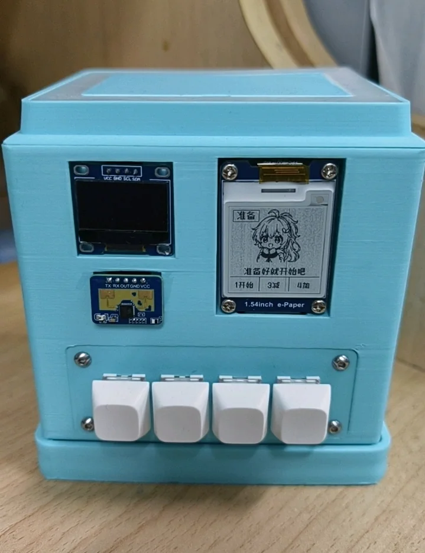

返回硬件项目索引
返回硬件项目索引H35 / 硬件团队 · 实体展示
寝室智能桌宠
档案封面选自寝室桌宠实物。
这是一款简易的寝室智能桌宠，面向专注学习场景，通过学习计时、环境检测和低打扰反馈，帮助学生及时关注空气状态与休息节奏。
系统以ESP32为主控，使用SCD41检测CO2、温度和湿度，使用LD2410C毫米波雷达判断用户是否位于桌前。用户到位后，设备进入准备页面，可以通过机械按键选择学习时长，再确认开始。学习过程中，OLED显示倒计时和实时环境数据，墨水屏显示当前阶段、桌宠表情和按键功能，WS2812B灯带使用低亮度颜色表达环境与学习状态。学习结束后，设备进入总结页面，显示本轮学习时长、CO2平均值与峰值、平均温湿度，并给出简短反馈。
